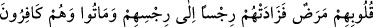
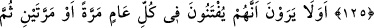

HER YIL SINANDIKLARINI
GÖRMÜYORLAR MI?
124. Ne zaman bir sûre indirilse onlardan kimi: “Bu, hanginizin îmanını artırdı?”
der. İman edenlere gelince, bu onların imanını artırır ve onlar sevinirler.
125. Kalplerinde hastalık olanlara gelince (bu), onların pisliklerine pislik katar. Ve
onlar kâfir olarak ölürler.
126. Kendilerinin her yıl bir veya iki defa sınandıklarını görmüyorlar mı? Yine de
tevbe etmiyor, öğüt almıyorlar.
127. Bir sûre indirildiği zaman: “Sizi birisi görüyor mu?” diye birbirlerine bakar,
sonra sıvışırlar. Anlamaz bir topluluk oldukları için Allah onların kalplerini
(imandan) çevirmiştir.
“Ne zaman” Kur’ân sûrelerinden “bir sûre indirilse”
Kur’ân sûrelerinin sayısı, ittifakla yüz on dörttür. Sûre, Allah Teâlâ’nın kelamından
bir bölüm demektir.
“Onlardan kimi” münâfıklardan bir kısmı inkar ve alay kabilinden olmak üzere
arkadaşlarına: “Bu” sûre “hanginizin imanını artırdı?” der.”
Münâfıklarda asla iman olmadığı halde burada îmanın artmasından bahsedilmesi,
müminlerin itikadı itibâriyledir. Bu sözde alay etmenin, nifak alâmetlerinden ve inkar
emârelerinden olduğuna işâret vardır.
Sonra Allah Teâlâ, yeni vahiylerin gelmesiyle hâsıl olan ilim ve onunla amel yoluyla
îmanın artacağına inanan müminlerle münâfıkların alay etmelerine ve onların
inkarlarına cevap olarak şöyle buyurmuştur:
Allah Teâlâ’ya ve O’nun katından gelenlere “iman edenlere gelince bu onların
îmanını artırır ve onlar” sûrenin inişiyle ve o sûredeki uhrevî ve dünyevî menfaatlerle
“sevinirler.”